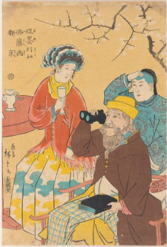

Yoshitora Utagawa, America, color woodblock print on paper, 1867
Utagawa Yoshitora was an 1850s Japanese artist, who focused on woodblock prints. He was a pupil of Utagawa Kuniyoshi who was revered for his style of prints called Yokohama-e, which saw foreigners as the art's subject. This style of woodblocks gained prominence after Japan's forceful opening in 1860. Yoshitora often tried to replicate scenes from foreign countries, with America as an example.
Utagawa Yoshitora was an 1850s Japanese artist, who focused on woodblock prints. He was a pupil of Utagawa Kuniyoshi who was revered for his style of prints called Yokohama-e, which saw foreigners as the art's subject. This style of woodblocks gained prominence after Japan's forceful opening in 1860. Yoshitora often tried to replicate scenes from foreign countries, with America as an example.

Utagawa Hiroshige II, An American, A French Woman and A Chinese Servant, color woodblock print on paper, 1860
Utagawa Yoshikazu, An Interior of an American Steamship, color woodblock print on paper, 1861
Utagawa Yoshitora was an 1850s Japanese artist, who focused on woodblock prints. He was a pupil of Utagawa Kuniyoshi who was revered for his style of prints called Yokohama-e, which saw foreigners as the art's subject. This style of woodblocks gained prominence after Japan's forceful opening in 1860. Yoshitora often tried to replicate scenes from foreign countries, with America as an example.